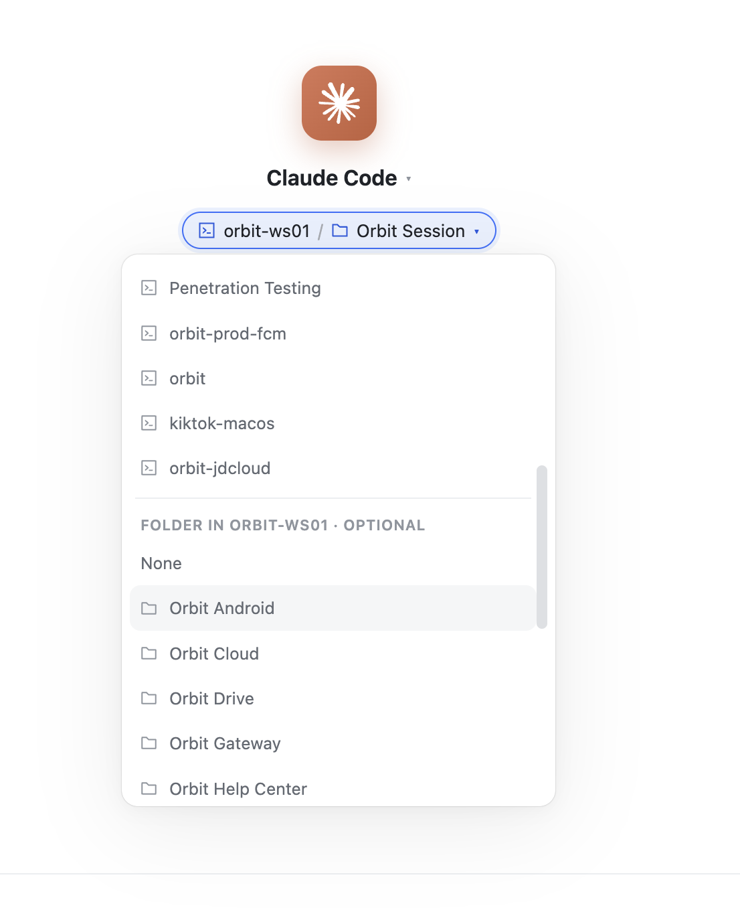

Menu already has these submenus.Menu nested in the menu. Android: the sheet's second page, as drawn.| Today | D · submenus | E · two columns | F · folders first | |
|---|---|---|---|---|
| Long lists | One scroll for both | Workspaces only scroll | Each column scrolls | Folders only scroll |
| Folder in another workspace | 2 trips | 1 pick | 1 pick | 2 trips |
| Folder here | Scroll down | Hover › then pick | Pick | Pick |
| Native on Mac / iOS / Android | Yes | Yes (submenu / drill-in) | Custom everywhere | Yes |
| Width | 280 | 300 + 250 on hover | 520 | 300 + 250 on hover |